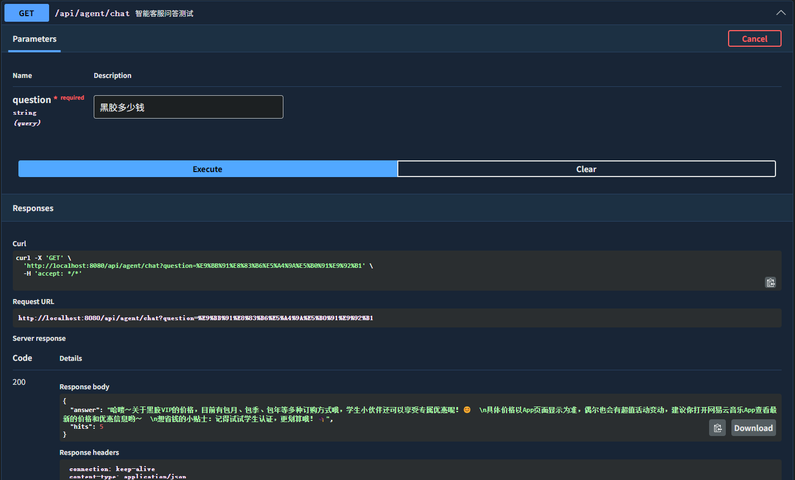
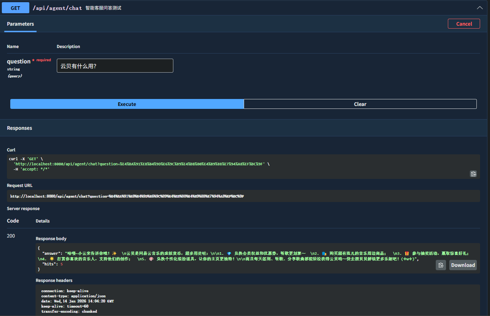
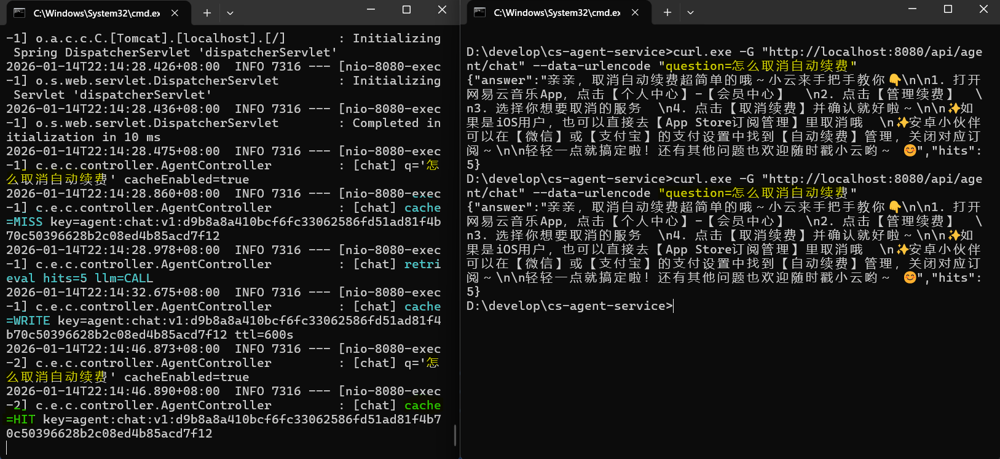

Overview
A minimal customer-support RAG backend with production-minded guardrails: strict grounding, fail-fast refusal when retrieval has zero hits, Redis hot-cache with smart TTL, and dev/prod profiles for realistic deployment.
Project Background
Customer support queries in music streaming apps (e.g., membership renewal, pricing) are repetitive and high-volume.
This project demonstrates a minimal RAG pipeline with production-minded engineering choices:
- Predictable control flow: synchronous end-to-end pipeline for stability
- Hallucination containment: refusal gate when retrieval has no hit
- Performance optimization: Redis caching for hot queries (with TTL and graceful degradation)
- Environment separation: H2 (dev) vs MySQL + Redis (prod simulation) via Spring Profiles
- Vendor-agnostic LLM integration: OpenAI-compatible protocol (DashScope/Qwen by default)
Key Features
Strict Grounding Policy (Fail-Fast)
- Hit = 0: return fixed refusal immediately (no LLM call)
- Hit > 0: inject "Known Info" and answer only based on retrieved context
Dual-Profile Support (Dev vs Prod Simulation)
- dev (default): H2 in-memory, zero infrastructure required
- prod: MySQL persistence + Redis caching (Docker Compose), closer to real-world deployment
Redis Caching (Hot Query Optimization)
- Cache-First Strategy: Checks Redis before triggering retrieval or LLM inference to reduce latency and token costs.
- Smart TTL:
- Standard Answer: Long TTL (e.g., 10 min) for high cache hit rate.
- Refusal (Hits=0): Short TTL (e.g., 30s) to prevent "stale refusals" after KnowledgeBase updates.
- Stability: Redis failures are logged as warnings; the read path degrades to a cache miss and falls back to DB+LLM without breaking the user request.
Minimal Retrieval Baseline (Top-K)
- Top-K lexical retrieval (K=5) over KnowledgeBase (Spring Data JPA)
- Optional query normalization + retry to improve recall on noisy inputs
- LIKE metacharacters in user input are escaped, so a question of
"
%" cannot match the whole table and bypass the refusal gate
Resilience (hand-written, no resilience4j)
- Explicit timeouts: connect / read / write / call, all configurable.
OkHttp leaves
callTimeoutunset by default, which lets a slowly dribbling upstream hold a thread indefinitely. - Full-jitter backoff:
sleep = random(0, min(cap, base * 2^attempt)). The randomness is the point — fixed backoff wakes every affected client at the same instant and knocks the recovering upstream back over. - Circuit breaker: three states, counting sliding window, bounded half-open probes. Only retryable failures count, so our own malformed request cannot trip it.
- Degradation: 503 +
Retry-After, and the degraded answer is never written to the cache.
Idempotent Writes (Idempotency-Key)
- Opt-in header on every write endpoint; same key + same payload replays the stored response instead of executing twice
- Same key + different payload → 422; still in flight → 409 +
Retry-After(the server never polls on the client's behalf) - A stored 4xx is replayed; a 5xx releases the key so a retry can succeed
- Fails closed when the store is unavailable — deliberately the opposite of the read path
Observability
X-Request-Idin MDC and echoed back; cleared in afinallyso pooled threads cannot leak it into the next request- Prometheus metrics for cache, refusals, retrieval depth, per-attempt upstream latency, circuit state, idempotency outcomes and degradations
- A test drives 50 distinct questions through the pipeline and fails the build if any metric tag value derives from user input
Architecture
Data Flow (Fail-Fast + Cache + RAG + Resilience)
- Input normalization (trim / simple cleanup)
- Redis cache lookup (hot query optimization)
- Top-K retrieval from KnowledgeBase (K=5)
- Refusal gate: if
hits == 0, return refusal (no LLM) - Prompt assembly: inject Known Info
- LLM inference (DashScope OpenAI-compatible endpoint)
- Write-back to Redis with TTL (Short TTL for refusals to avoid stale refusals)
Benchmarks
Measured on 2026-08-18, prod profile (MySQL + Redis via docker compose),
AMD Ryzen 7 8745H / 16 logical cores, JDK 17, Spring Boot 4.0.1.
Nothing here is estimated. Full metadata, repro commands and raw
per-run output are in
docs/benchmarks.md.
| scenario | n | conc. | p50 | p95 | throughput | upstream |
|---|---|---|---|---|---|---|
refusal — gate fires | 500 | 20 | 23.4 ms | 33.3 ms | 778 req/s | not called |
cache_hit | 500 | 20 | 13.5 ms | 21.9 ms | 1321 req/s | not called |
llm_path — latency | 20 | 1 | 2364 ms | 3175 ms | — | real DashScope |
llm_path — throughput | 500 | 20 | 2401 ms | 2446 ms | 8.3 req/s | stub, 2364 ms injected |
- The refusal gate is worth ~95× at p95 (33 ms vs 3175 ms), and it spends zero API quota.
- The service adds 1.6% on top of upstream latency. With the upstream
pinned to a known 2364 ms, measured p50 is 2401 ms — 37 ms for two SELECTs, prompt
assembly and two Redis operations. Throughput lands within 2% of the theoretical
20 / 2.364 s, so at concurrency 20 the service adds no queueing of its own.
The real-DashScope row and the stubbed row measure different things on purpose: the first is what a user waits, the second is what the service can carry regardless of how the upstream feels today. They are not interchangeable.
What Measuring Actually Found
The load test and the failure drills were not decoration. Each of these was invisible in a green test suite and only appeared under real load or real failure.
1. open-in-view capped concurrency at the connection pool
The first throughput run reported 3.5 req/s where the configuration should have given
8.3 — exactly half, with p50 at twice the injected delay. Only ~10 requests were
ever in flight, and 10 is Hikari's default pool size. Cause:
spring.jpa.open-in-view defaults to on, pinning a JDBC connection for the
whole request including the 2.4 s model call that touches no database. The connection
pool, not the 200-thread Tomcat executor, was the ceiling.
Fixed by releasing the connection rather than growing the pool — a bigger pool just moves the ceiling while connections still idle through a 2.4 s wait.
2. Graceful degradation that took two minutes
With Redis stopped, the read path returned 200 after 120 s and the write path 503 after 60 s. The direction was right; the latency made it worthless. Lettuce's default command timeout is 60 s, and the read path ate two of them. Every such request held a Tomcat worker for a full minute, so a Redis outage would have exhausted the thread pool in seconds and taken down even the refusal path — which needs no Redis at all.
Explicit 250 ms timeouts brought it to 1.2 s / 0.3 s. Degradation that stalls before it degrades has relocated the outage, not contained it.
3. LIKE metacharacters bypassed the refusal gate
User input flowed unescaped into LIKE CONCAT('%', :q, '%'). A question of
"%" matched the whole table, so retrieval reported 5 hits, the refusal gate
did not fire, and the model was asked to answer using five unrelated knowledge entries
— a confident hallucination plus a wasted API call. A test calls the raw query
directly and asserts it returns 5 rows, so the bug is demonstrated rather than merely
asserted away.
4. Seed data duplicating on every restart
spring.sql.init.mode=always with unguarded INSERTs is harmless on dev's
fresh in-memory H2, but the compose MySQL volume had grown to 300 rows across 10
distinct questions. Top-5 retrieval was returning five copies of one entry, so the
prompt carried five identical grounding paragraphs.

Swagger UI (endpoint visible)

Example API response (answer + hits)

Cache proof logs (MISS → LLM CALL → WRITE, then HIT with no LLM)
Tech Stack
Prompt Policy
| Component | Choice | Description |
|---|---|---|
| Language | Java 17 | Core development language |
| Framework | Spring Boot | Web MVC and dependency injection |
| ORM | Spring Data JPA | Repository abstraction over DB |
| Database (dev) | H2 | Zero-infra rapid development |
| Database (prod) | MySQL 8 | Persistence for production simulation |
| Cache (prod) | Redis 7 | Hot query caching with TTL |
| LLM Integration | OkHttp + Jackson | OpenAI-compatible chat completion client |
| API Docs | OpenAPI / Swagger UI | API exploration and testing |
| Deployment | Docker Compose | One-command infra startup |
The system uses a rigid template to prevent the LLM from using external knowledge.
[System Role]
Persona: NetEase Cloud Music customer support agent
Constraint: Answer ONLY using the provided "Known Info".
Failure Case: If the info is insufficient, reply exactly:
"抱歉，小云暂时还没学会这个问题"
No fabrication allowed.
[User Role]
Known Info:
[1] <retrieved_answer_1>
[2] <retrieved_answer_2>
...
User Question: <question>AI-Assisted Development (Vibe Coding)
This project was developed with AI assistance using Cursor(model: GPT-5.2), utilizing a "Human-in-the-Loop" workflow:
- Scaffolding & Drafting: Rapid generation of Spring Boot boilerplate and configuration wiring.
- Documentation & Visualization: Iterative refinement of the README and Mermaid architecture diagrams.
- Debugging Support: Analyzing stack traces and resolving dependency conflicts.
Verification:
All AI-assisted changes were manually reviewed and adjusted. Key engineering patterns (cache degradation strategies and dev/prod profile isolation)
were validated through reproducible drills (cache hit/miss logs, Redis-down degradation drill).